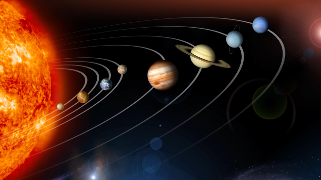
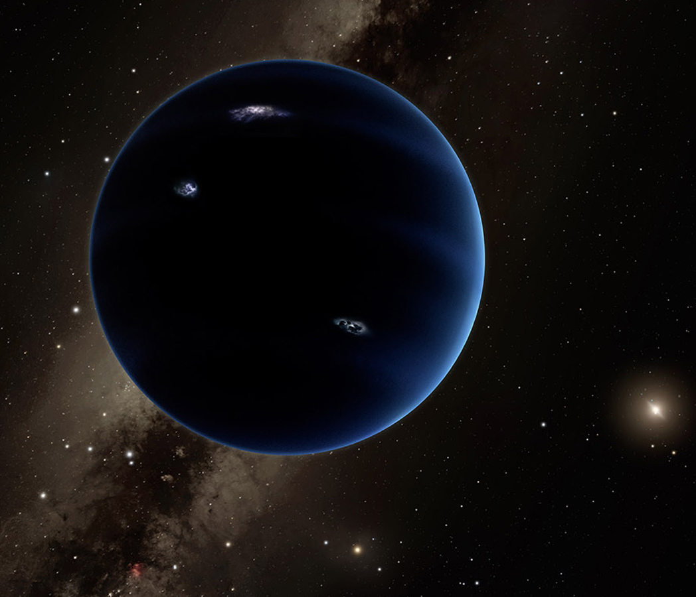
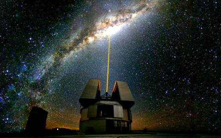

@CristianMoraru
Student FMI
 Mai poate stratul de ozon al Pamantului sa se regenereze? Oamenii de stiinta au raspunsul, insa...
Mai poate stratul de ozon al Pamantului sa se regenereze? Oamenii de stiinta au raspunsul, insa...
 NASA a realizat o colectie noua de fotografii ale Sistemului Solar! Fotografia numarul 7 te va uimi!
 Misterioasa Planeta X nu este doar un mit? Vestea socanta, conform celor mai recente studii...
 Inaugararea noului telescop romanesc tocmai a avut loc! Cat a costat acest proiect monumental?
 Prima imagine a unei gauri negre ne-a indus in eroare? Ce greseala a trecut cu vederea NASA...
Prima imagine a unei gauri negre ne-a indus in eroare? Ce greseala a trecut cu vederea NASA...
Care este problema?
"Stratul de ozon care protejează viaţa de pe Terra de radiaţiile solare cauzatoare de cancer se reface într-un ritm de între 1% - 3% pe deceniu, inversând astfel o tendinţă periculoasă, manifestată timp de mulţi ani, ce semnala epuizarea graduală a acestui gaz din atmosfera terestră din cauza emisiilor de substanţe dăunătoare, se afirmă într-un studiu realizat de ONU şi dat publicităţii în cursul zilei de luni, informează Agerpres, care citează Reuters.
Cum arata situatia la momentul actual?
O analiză pe patru ani a Protocolului de la Montreal, o interdicţie din 1987 a gazelor industriale care distrug fragilul strat de ozon aflat la mare altitudine, a constatat o scădere pe termen lung a substanţelor din atmosferă care distrug ozonul şi un proces de refacere - aflat în plină desfăşurare - a ozonului din stratosferă.
„Gaura de ozon de deasupra Antarcticii este în proces de refacere, deşi continuă să apară în fiecare an. Ca rezultat al Protocolului de la Montreal, o scădere mult mai severă a ozonului din regiunile polare a fost evitată”, precizează acelaşi raport.
Mai sunt sperante?
Specialiştii se aşteaptă ca gaura de ozon de deasupra Antarcticii să se acopere gradual şi să ajungă în 2060 la nivelul ei din anul 1980, potrivit documentului menţionat.
„Dovezile prezentate de autorii studiului arată că stratul de ozon din zone ale stratosferei s-au recuperat într-un ritm de 1%-3% pe deceniu începând din anul 2000”, au transmis într-un comunicat Programul Organizaţiei Naţiunilor Unite pentru Mediu şi Organizaţia Meteorologică Mondială.
„În ritmurile prognozate, ozonul din emisfera nordică şi de la latitudini medii este programat să se refacă complet până în anii 2030, urmând emisfera sudică până în anii 2050 şi regiunile polare până în 2060”, se afirmă în acelaşi studiu.
ONU a salutat deja succesul Protocolului de la Montreal, care a interzis sau a eliminat treptat substanţele chimice dăunătoare ozonului, inclusiv clorofluorocarburile (CFC), utilizate în trecut pe scară largă de producătorii de frigidere şi spray-uri, însă noul raport al ONU afirmă că este pentru prima oară când apar indicii ale faptului că gaura de ozon de deasupra Antarcticii s-a diminuat ca mărime şi ca adâncime după anul 2000.
În Arctica, variaţiile anuale sunt mult mai mari, făcând mult mai dificilă confirmarea unei recuperări categorice a stratului de ozon după anul 2000.
Sursa: Digi24